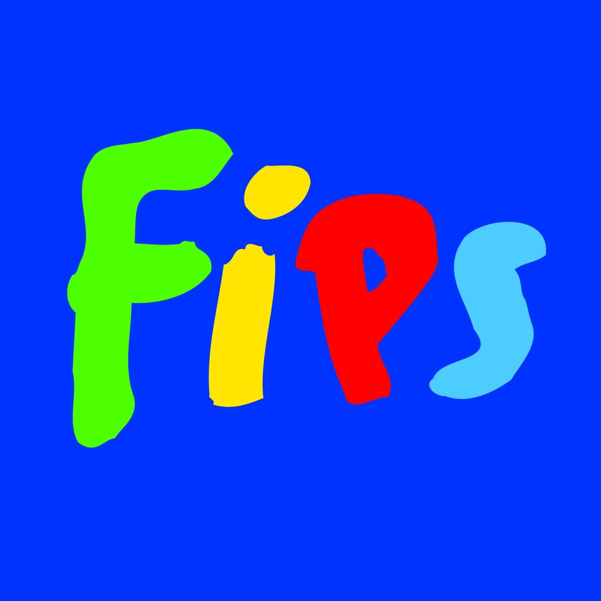
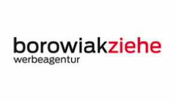

Sie finden, dass Ökostrom eine gute Sache ist, haben aber keine Lust
oder keine Zeit, sich mit dem Anbieterwechsel auseinanderzusetzen? Dann
sind Sie hier genau richtig. Vielleicht haben Sie bereits die
Info-Broschüre der „Aktion Grüne Salzsau” gelesen,
vielleicht sind Sie auf anderem Wege auf uns gestoßen - in jedem Fall
freuen wir uns, dass Sie diese Webseite besuchen. Mit dieser hoffen wir,
Sie bei einem unkomplizierten Wechsel zu einem nachhaltigen
Stromanbieter unterstützen zu können. Sie finden hier alle wichtigen
Informationen für den Bezug von Strom aus regenerativen Quellen kurz und
knapp zusammengefasst.
Suchen Sie Ihre letzte Stromabrechnung heraus. Dort finden Sie Ihren
aktuellen Stromverbrauch
Kontaktieren Sie einen oder mehrere Ökostromanbieter und holen Sie
Angebote ein
Wählen Sie ein Angebot aus. Lehnen Sie sich zurück und lassen Sie den
Wechsel von Ihrem neuen Anbieter durchführen
Regional ansässige Ökostromanbieter
Dies ist eine Auswahl ökologisch sinnvoller Alternativen zu
konventionellen Stromanbietern. Sie sind in der Regel günstiger als die
Grundversorgung. Alle hier aufgelisteten Anbieter erfüllen die Kriterien
für „echten” Ökostrom.
Mehr Ökostromanbieter finden Sie auch auf Vergleichsportalen, wie zum
Beispiel
biostromvergleich.de
- hier einfach „nur Ökostrom” und „nachhaltig” auswählen und
Stromanbieter finden.
Einige regional ansässige Ökostromanbieter Listen wir Ihnen gerne auf:
BÜRGERWERKE
Lokale, dezentrale Energiegenossenschaften
100% Ökostrom aus deutschen Erneuerbare-Energien-Anlagen
Wenn Sie eine bestimmte regionale Energiegenossenschaft mit Ihrem
Stromtarif unterstützen wollen, geben Sie diese bitte bei
Vertragsabschluss an - in Hamburg z.B. die
Vereinte Energiegenossenschaft.
Anmerkung zur Auswahl der Anbieter: Die oben genannten Firmen (mit
Ausnahme von Lünestrom) entstammen einer Veröffentlichung des
Ökoinstituts, die alle Ökostromanbieter mit den renommierten Siegeln
„OkPower” und „Grünstrom” angibt:
Arbeit des Ökoinstituts.
Warum Ökostrom?
In Deutschland ist laut Umweltbundesamt die Stromerzeugung der größte
Verursacher von Treibhausgasemissionen wie CO₂. Mit einem Wechsel zu
Ökostrom können diese schädlichen Emissionen vermieden, und damit ein
wichtiger Beitrag zur Energiewende und zum Umweltschutz geleistet
werden.
Ökostrom ist in Deutschland kein gesetzlich definierter Begriff: Es ist
daher wichtig, zwischen Anbietern, die ausschließlich Ökostrom
vertreiben und solchen Versorgern, die neben Strom aus erneuerbaren
Energien auch konventionellen Strom anbieten, zu unterscheiden. Durch
das Erneuerbare-Energien-Gesetz (EEG) aus dem Jahr 2000, welches die
Stromerzeugung aus erneuerbaren Energien fördert, fließt anteilig
Ökostrom in Tarife mit konventioneller Energie. Daher können
Stromversorger angeben, Ökostrom anzubieten, auch wenn sie keinen
zusätzlichen Ökostrom über Herkunftsnachweise (HKN) beziehen.
„Echte” Ökostromanbieter zeichnen sich durch mehrere Merkmale aus. Zum
einen sind sie transparenter hinsichtlich der Eignerstruktur des
Unternehmens und der Herkunft des Ökostroms. Zum anderen erfüllen sie
bestimmte ökologische Standards, wie die Vermarktung von
Ökostromprodukten, welche in neuen, umweltfreundlichen Kraftwerken
entstehen. Entscheidend ist auch, dass sie durch die Förderung von
Neuanlagen direkt zum Ausbau erneuerbarer Energien beitragen und
unabhängig von Atom- und Kohlestrom sind.
Mit Ökostrom das Klima schützen!
Bei einem Verbrauch von 10.000 kWh reduzieren Sie den Ausstoß von 4.760
kg CO2 pro Jahr.
Das entspricht…
...der CO2 Bindung von 42 Bäumen
...dem Ausstoß einer Autofahrt von 34.081 km
...und warum bezieht Ihr Ökostrom?

Fips Spielzeugladen
Verbrauch: 21.000 kWh/Jahr
Kosten: 5.040 €/Jahr
„Ich bin der Meinung, man sollte als Kaufmann seine gesellschaftliche
Verantwortung aktiv wahrnehmen, sich seiner Strahlkraft bewusst sein
und diese auch nutzen. Der Bezug von grüner Energie ist mir persönlich
sehr wichtig, deshalb habe ich mich für meinen Laden für Naturstrom
entschieden. Der Anbieter hat mich überzeugt, weil er viele soziale
Projekte fördert und durch seine Größe mehr bewirken kann.“
- Friedrich Busch

Borowiakziehe KG
Verbrauch: 35.000 kWh/Jahr
Kosten: 9.240 €/Jahr
„Wir haben nach unserer „Anti Plastikparty“ im Frühjahr 2019 erkannt,
dass wir diesen ökologischen Ansatz konsequent in der Agentur
weiterführen müssen. Deshalb haben wir uns für einen Wechsel zu
Lünestrom entschieden, der uns von seinem klaren ökologischen Konzept
überzeugt hat. Okay, wir zahlen etwas mehr, aber das guten Gewissens.“
- Siegfried Ziehe
Über das Projekt
Hinter der „Grünen Salzsau” steht ein Forschungsprojekt, das im Rahmen
einer Masterarbeit an der Leuphana Universität Lüneburg und in
Zusammenarbeit mit drei Lüneburger Unternehmen konzipiert wurde. Mit dem
Projekt sollen Unternehmer*innen unterstützt werden, einen Beitrag zum
Klimaschutz und damit zu einer nachhaltigen Entwicklung in Lüneburg zu
leisten.
Wir, zwei Masterstudentinnen der Leuphana Universität Lüneburg, haben
uns im letzten Jahr im Rahmen eines Seminars mit dem Thema „Lokale
Wirtschaft” auseinandergesetzt und eine Umfrage entwickelt, die darauf
abzielt herauszufinden, welche Faktoren in der Unternehmensführung eine
Rolle spielen. Die Umfrage hat sich insbesondere auf die Aspekte
Lokalität und Nachhaltigkeit bezogen und wurde an die Mitglieder des
„Lüneburger City Managements” (LCM) verschickt. Einer der abgefragten
Faktoren war der Bezug von und die Einstellung zu Ökostrom. Dabei
stellte sich heraus, dass viele Unternehmer*innen dieses Thema wichtig
finden, jedoch in ihrem Unternehmen keinen Strom aus erneuerbaren
Energien beziehen. Nach weiteren Gesprächen mit einigen dieser
Unternehmen wurde deutlich, dass dies vor allem an mangelnden
Informationen zu Ökostrom und dem scheinbar komplizierten
Anbieterwechsel liegt.
Als Masterarbeits-Projekt hat sich daraus ergeben, Unternehmer*innen den
Wechsel mittels einer Informations-Broschüre und dieser Webseite so
einfach wie möglich zu gestalten.